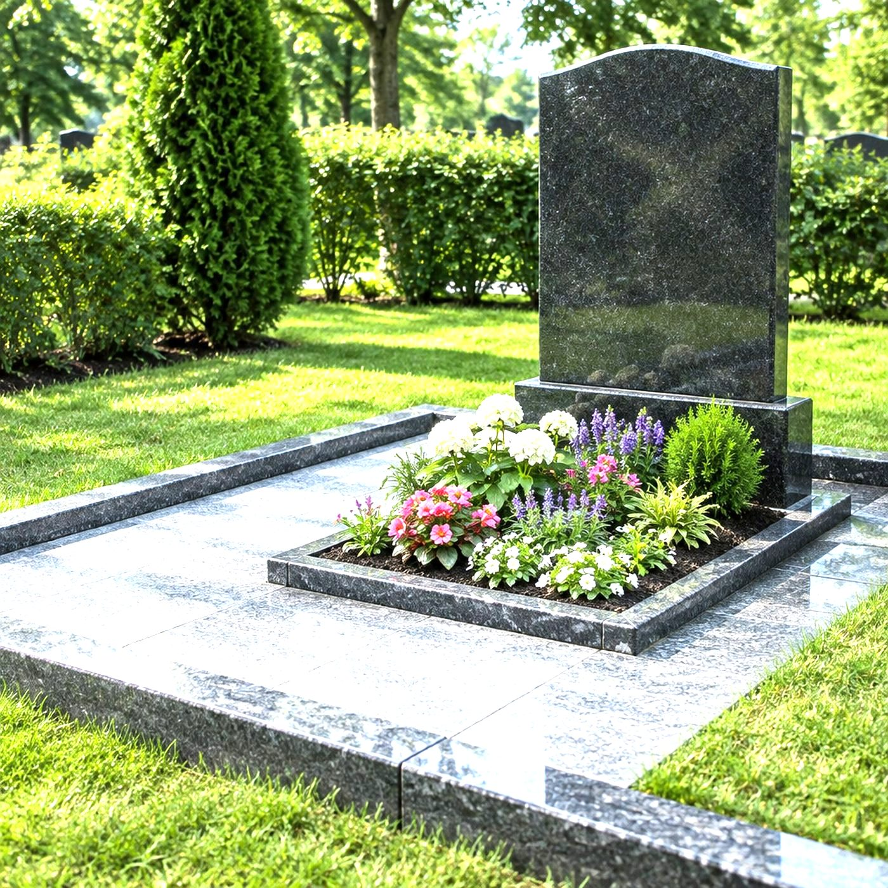

Благоустройство места захоронения
Плитка, ограды, цоколи, цветники: все виды работ по участку. Можно собрать состав схемой и обсудить его сразу.
Соберите участок
Отметьте элементы: схема обновится, а состав работ можно сразу отправить в WhatsApp. Размеры и стоимость уточняются по участку.
Что нужно на участке
Написать в WhatsAppСтоимость считаем после уточнения размеров участка и выбранного гранита: она зависит от площади плитки, длины ограды и формы памятника.
Состав работ
Что входит в благоустройство
Каждый элемент делается так, чтобы служил долго: с подготовкой основания, а не «плитка на грунт».
Плитка
Гранитная или тротуарная, с подушкой, уклонами для воды и аккуратными швами.
Ограда
Сварная с покраской или гранитная. По периметру участка, с калиткой при необходимости.
Цоколь
Основание под памятник: от него зависит, как встанет стела и как она переживёт зиму.
Цветник
Гранитный бордюр, грунт под посадку, при желании — многолетние растения.
Уборка после работ
Вывоз остатков материалов и уборка участка: сдаём место в порядке.
От замера до уборки
Вопросы по благоустройству
Сколько занимает благоустройство?
Зависит от площади и состава: небольшой участок — несколько дней, комплекс с оградой и цветником — дольше. Срок называем после замера.
Можно делать зимой?
Часть работ зависит от температуры и грунта. Обычно благоустройство планируют с весны.
Можно обновить только плитку?
Да. Часто меняют только покрытие, оставляя памятник и ограду.
Убираете ли старые материалы?
Да, вывоз и уборка входят в работы: участок остаётся чистым.
Нужен замер вашего участка?
Позвоните: договоримся о времени, посмотрим участок и предложим состав.